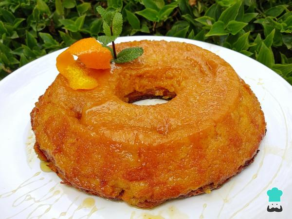

Livro de Receitas
Receita de Pudim sem leite condensado

Todo o mundo tem sua preferência na hora de fazer pudim e a minha é fazer pudim sem leite condensado!
Algumas pessoas podem achar isso meio impossível, mas o pudim tradicional português é feito sem leite condensado mesmo e a textura e sabor são bem gostosos!
Para fazer um pudim sem leite condensado precisamos de uma grande quantidade de ovos, pois eles é que vão deixar essa sobremesa consistente. Por vezes o ovo tem fama de deixar as sobremesas com cheiro e gosto ruim, mas isso não acontece nessa receita de pudim caseiro pois vai também suco de laranja, raspa de laranja e mel. Não tem como não ser gostoso e aromático!
Ingredientes para fazer Pudim sem leite condensado:
- 350 gramas de açúcar
- 2 laranjas
- 8 ovos médios
- 2 colheres de sopa de mel
- 1 colher de sopa de maisena (amido de milho)
Para o Caramelo
- 2 colheres de sopa de água
- 4 colheres de sopa de açúcar
Como fazer Pudim sem leite condensado:
- Comece por lavar bem as laranjas, de preferência com uma escova própria para legumes. Depois seque-as e rale uma das laranjas de forma a obter uma raspa sem a parte branca (para não amargar).
Dica: neste momento preaqueça o forno nos 180ºC.
- Adicione o açúcar e a raspa da laranja numa tigela ou no liquidificador. Esprema o suco das duas laranjas e junte a esses ingredientes.
Dica: se o suco de laranja tiver muita polpa de laranja, passe-o por uma peneira antes de adicionar na tigela ou no liquidificador.
- Adicione o mel e bata muito bem. Depois adicione os ovos um por um, batendo entre cada adição.
- Por fim, e para obter um pudim mais consistente sem o risco de desmanchar na hora de desenformar, acrescente a maisena e mexa para dissolver bem.
Dica: peneire a maisena para evitar grumos na massa de pudim.
- Agora outro truque: deixe a massa do pudim descansar por 10-15 minutos na geladeira, isso ajudará a conseguir uma melhor consistência do pudim sem leite condensado! Como alternativa, retire uma parte da espuma da massa com uma colher.
- Coloque o açúcar e a água na forma de pudim e esquente diretamente no fogo até o açúcar derreter completamente e começar a caramelizar. Espalhe o caramelo por toda a forma e coloque a massa do pudim nele.
- Leve para assar no forno a 180ºC por 40-45 minutos ou até o pudim ficar consistente - você poderá confirmar essa consistência picando um palito no pudim após assar por 30 minutos.
Dica: no caso, não precisa tampar o pudim nem assar em banho-maria.
- Quando este pudim de laranja e mel estiver assado, retire-o do forno e espere esfriar um pouco. Depois desenforme cuidadosamente e reserve na geladeira por 1-2 horas para servir geladinho. Tenho a certeza que todo o mundo vai amar, por isso não hesite em fazer esta receita e dizer nos comentários o que achou. Bom apetite!
Veja mais receitas e dicas abaixo:
Escreva seu comentário